<!--
@license
Copyright (c) 2016 The Polymer Project Authors. All rights reserved.
This code may only be used under the BSD style license found at http://polymer.github.io/LICENSE.txt
The complete set of authors may be found at http://polymer.github.io/AUTHORS.txt
The complete set of contributors may be found at http://polymer.github.io/CONTRIBUTORS.txt
Code distributed by Google as part of the polymer project is also
subject to an additional IP rights grant found at http://polymer.github.io/PATENTS.txt
-->

<link rel="import" href="../../bower_components/polymer/polymer.html">

<link rel="import" href="../common-element/footer-element.html">
<link rel="import" href="../common-element/toc-behavior.html">
<link rel="import" href="../common-element/member-card-element.html">

<link rel="import" href="../common-element/common-styles.html">

<dom-module id="meg-canmychildparticipate">
  <template>
    <style include="common-styles"></style>
    <style>
      :host {
        display: block;
      }
    </style>

    <article>
      <header class="center">
        <h1>Can My Child Participate?</h1>
      </header>

      <nav>
        <div>Content</div>
        <div>Can My Child Participate?</div>
        <ul>
          <li><a href="#about" label="about" on-tap="__scrollTo">Who is eligible?</a></li>
          <li><a href="#about" label="about" on-tap="__scrollTo">Why is MEG necessary?</a></li>
          <li><a href="#about" label="about" on-tap="__scrollTo">Does MEG have any risks?</a></li>
        </ul>
        <div>What Should I Expect During My MEG Visit?</div>
        <ul>
          <li><a href="#about" label="about" on-tap="__scrollTo">How Long is the Visit?</a></li>
          <li><a href="#about" label="about" on-tap="__scrollTo">How Do I Get My Child Ready?</a></li>
          <li><a href="#about" label="about" on-tap="__scrollTo">What Should I Bring the the MEG Appointment?</a></li>
          <li><a href="#about" label="about" on-tap="__scrollTo">What Should I Do When I Arrive at the Hospital Lobby?</a></li>
          <li><a href="#about" label="about" on-tap="__scrollTo">What Happens During the Visit?</a></li>
        </ul>
      </nav>

      <main>
        <p>&nbsp;</p>

        <section>
          <div class="imageContainer maxflow">
            <div style="height: 500px">
                 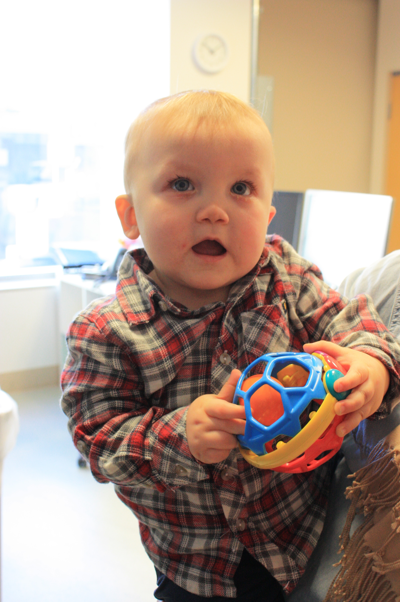
            </div>

            <div>
              <h2 id="about" class="maxflow" class="maxflow">Who is eligible?</h2>
              <p>A child must meet the following criteria in order to be eligible for our studies:</p>
              <ul style="list-style-type:square">
                <li>Be a healthy neurotypically developing child</li>
                <li>Be between the ages of newborn and 4 years of age</li>
                <li>Have NO metallic implants of any kind</li>
              </ul>

              <h2 id="about" class="maxflow" class="maxflow">Why is MEG necessary?</h2>
              <ul style="list-style-type:square">
                <li>MEG helps us to learn more about brain functions during early infancy in healthy children.
                  Information gained from MEG recordings can allow us to help patients with neurological disorders,
                  such as epilepsy, cerebral palsy, autism spectrum disorders, and Down syndrome.</li>
              </ul>
          </div>
        </section>

        <section>
          <h2 id="about" class="maxflow" class="maxflow">Does MEG have any risks?</h2>

          <ul style="list-style-type:square">
            <li>There are no reports of injuries or harm to patients who have had MEG. MEG is silent and non-invasive. It does not produce any magnetic fields and does not involve any ionizing radiations.</li>
              <li>The magnetic signals made by brain activity are very small compared to those from the earth and electrical machines. The MEG scanner is placed in a room that protects from environmental noise called a magnetically shielded room (MSR).</li>
              <li>MEG is very sensitive to metal. Metal inside the MSR can change the results. Your child may not be able to have a scan if he/she is wearing dental braces that cannot be removed, has metal implants,  a pacemaker, a stent, a shunt, and/or aneurysm clips.</li>
              <li>Your child will be asked to remove, if possible, any metal objects that he/she has: glasses, jewelry, hair pins, removable dental braces, hearing aid.</li>
        </section>
      </main>
    </article>

    <article>
      <header class="center">
        <h1>What Should I Expect During My MEG Visit?</h1>
      </header>

          <main>
              <p>&nbsp;</p>

              <div style="height: 500px""align: center;">
                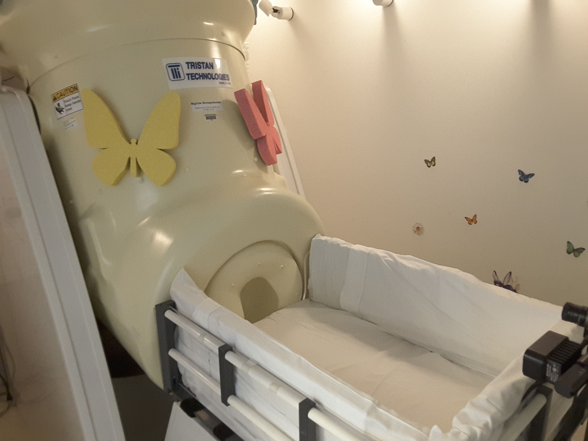
              </div>
            <section>
              <h2 id="about" class="maxflow" class="maxflow">How Long is the Visit?</h2>

                <ul style="list-style-type:square">
                  <li>The entire set-up and test will take approximately 3 hours.</li>


            </section>
            <div style="height: 500px">
              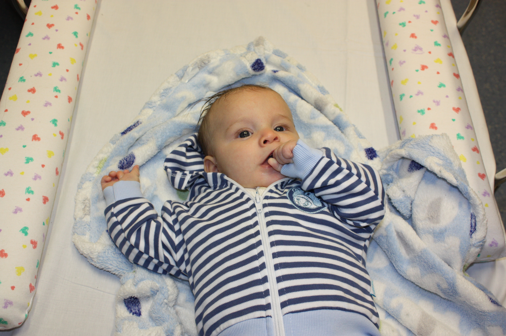

            </div>
            <section>
              <h2 id="about" class="maxflow" class="maxflow">How Do I Get My Child Ready?</h2>
         <ul style="list-style-type:square">
           <li>Wash your child’s hair the night before the test. Do not use any oil, gel, or hairspray as that can change test results.</li>
           <li>Your child should take all normal medicines before the test.</li>
           <li>On the day of the MEG recording, your child can eat meals but should not have any drinks or food that contain caffeine, such as soda, or chocolate.</li>
           <li>Before starting the MEG recording, we can  provide a change of clothes (hospital gowns) for your child if he/she is wearing metallic clothing. </li>
           <li>Depending on the type of research study, we may schedule a scan during your child’s natural naptime or even request to skip a nap for sleep recordings. In this case, please do not allow your child to fall asleep while commuting to the hospital.</li>
           <li>If your child cannot sleep during the MEG, we will not be able to do a sleep study. In this case, we may need to schedule for another visit, if desired.</li>
     </section>
    <section>
     <div class="imageContainer maxflow">
       <div style="height: 500px">
            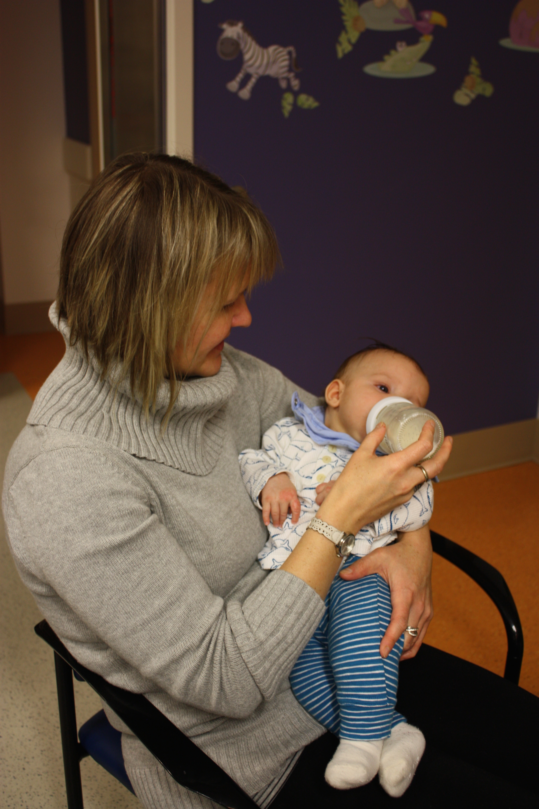
    </div>
    <div>
      <p>&nbsp;</p>
       <h2 id="about" class="maxflow" class="maxflow">What Should I Bring to the MEG Appointment?</h2>

       <ul style="list-style-type:square">
         <p>&nbsp;</p>
         <li>It is helpful to bring something to comfort your child, such as blankets, bottles, favorite stuffed animals, or pacifiers. Please make sure there is no metal in those items, as they cannot go into the magnetically shielded room.</li>
    </div>
    </section>

    <section>
      <div class="imageContainer maxflow">
        <h2 id="about" class="maxflow" class="maxflow">What Should I Do When I Arrive at the Hospital Lobby?</h2>
      <ul style="list-style-type:square">
        <li>Inside the lobby of the main building, you will see a large video screen. A member of our team will meet you there, by this screen, because the lab can be hard to find! Once you arrive, please give us a call at  617-355-8941 and someone will come meet you.</li>

        <div style="height: 500px">
             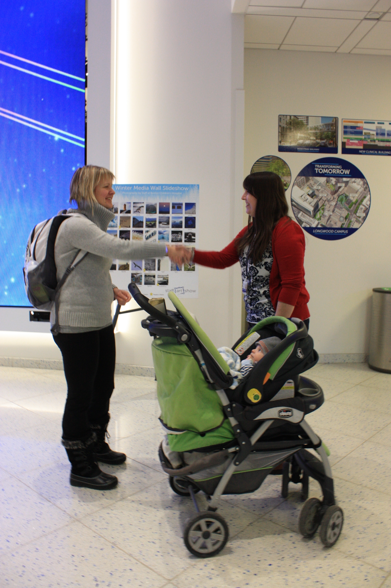
     </div>
     <div>

    </section>

    <section>
    <h2 id="about" class="maxflow" class="maxflow">What Happens During the Visit?</h2>
    <div style="height: 500px""align: center;">
    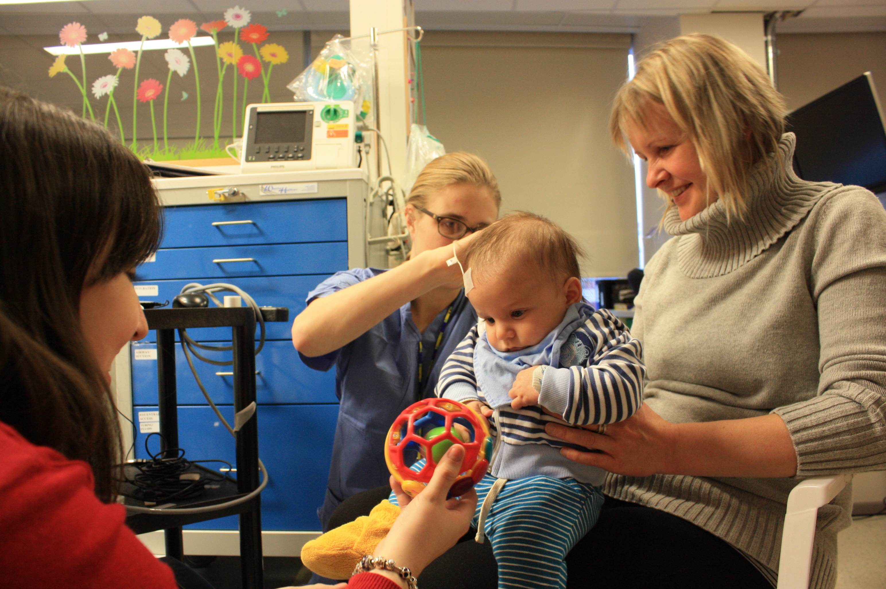
    </div>
    <p>Trained MEG technicians will perform the MEG recording and explain each step to you and your child.</p>
    <ul style="list-style-type:square">
    <li>Sensors will be placed on the head to measure head movements.</li>
    <div style="height: 500px""align: center;">
    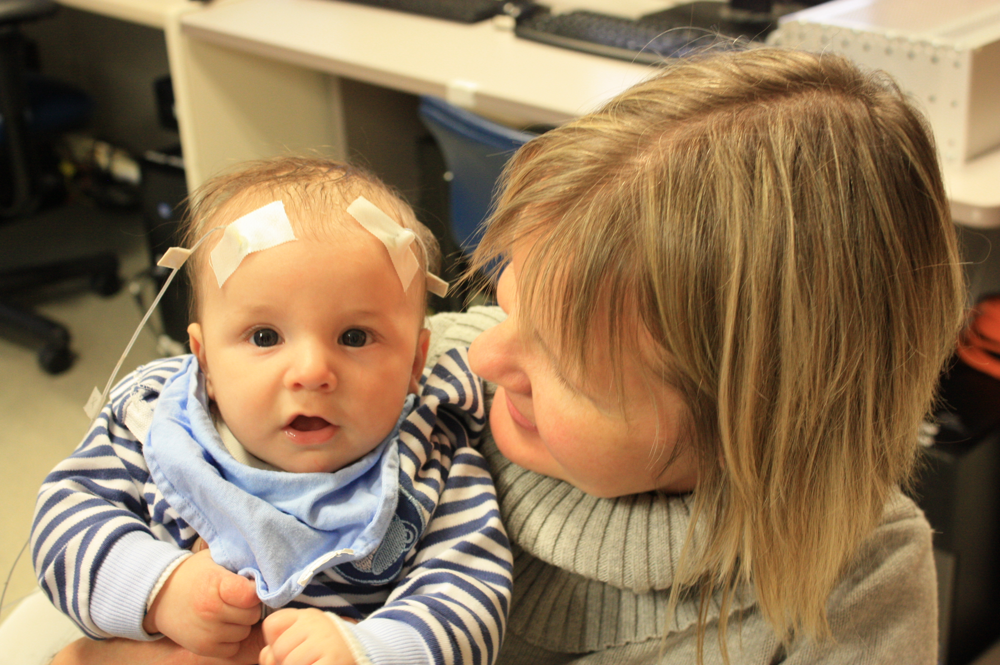
    </div>
       <p>&nbsp;</p>
    <li>Using a digital scanner, technicians will scan your child's head to create a 3D image of the head's shape.</li>
    <div style="height: 500px""align: center;">
    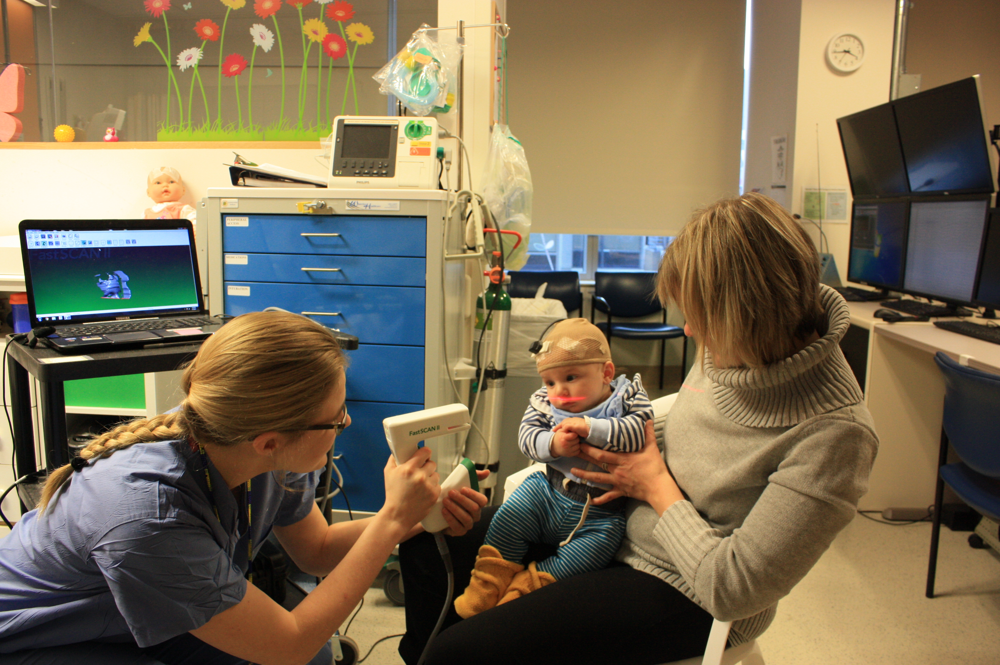
    </div>
       <p>&nbsp;</p>
    <li>Electrodes with skin friendly tape will be placed around the eyes to measure eye movements and on the stomach to measure heart beats.</li>
    <div style="height: 500px""align: center;">
    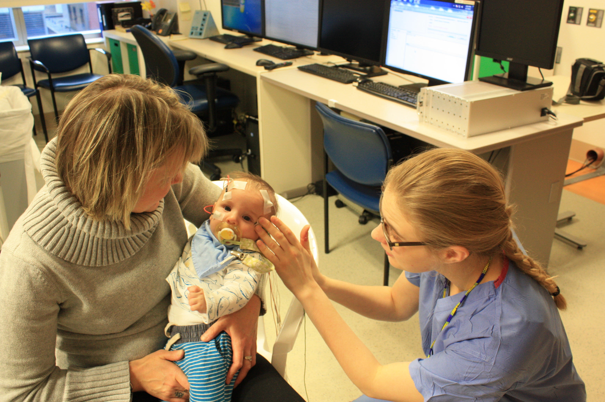
    </div>
       <p>&nbsp;</p>
    <li>In some studies, an electroencephalography (EEG) cap with washable gel will be placed on your child’s head.</li>
    <div style="height: 500px""align: center;">
    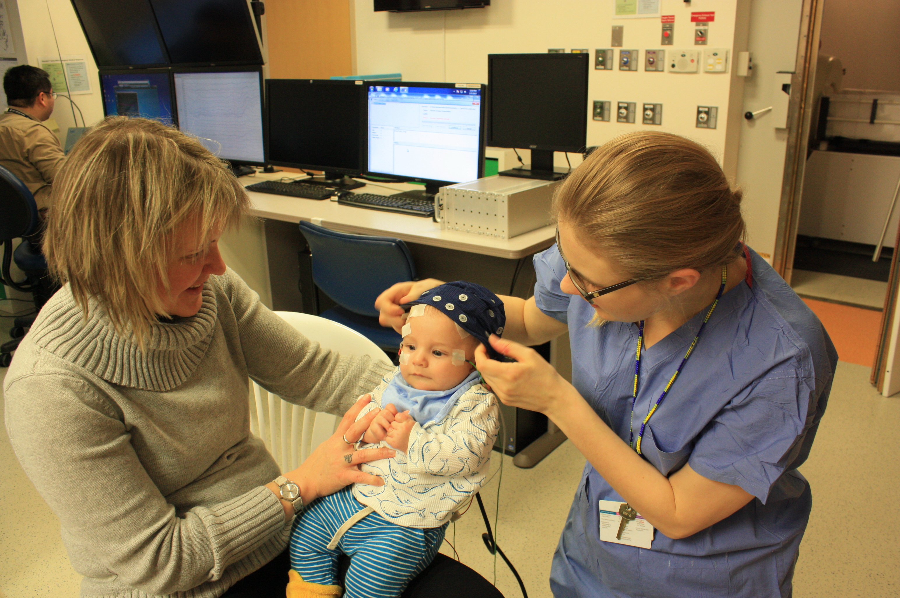
    </div>
       <p>&nbsp;</p>
    <li>The technician will position your child on the bed of the BabyMEG scanner and stay with him/her in the magnetically-shielded room (MSR). If you choose, you may remain with your child in the magnetically shielded room (provided you are also wearing non-metallic clothing). Alternatively, you may observe the recording via a closed circuit TV system.</li>
    <div style="height: 500px""align: center;">
    
    </div>
       <p>&nbsp;</p>
    <li>Another technician will perform the recording from outside of the MSR where he/she can see and talk, via intercom system, with the people inside of the MSR during the scan. </li>
    <div style="height: 500px""align: center;">
    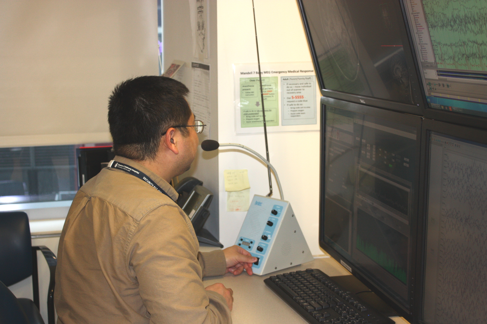
    </div>
       <p>&nbsp;</p>
    <li>Depending on the type of study a recording session may last from a few minutes to an hour. However sleep studies may last longer than an hour. </li>

    <li>In between recording sessions, we will provide frequent breaks to the child to minimize tiredness or any discomfort.</li>

    <li>If your child is old enough to understand instructions, we may request the child to hold still during the recording. </li>
       <p>&nbsp;</p>

    <div class="imageContainer maxflow">
      <li>Most of the time, children will be presented with auditory, tactile or visual stimuli during the MEG recordings. </li>
      <li>Children who are old enough to understand instructions may be requested to respond to the stimuli presented by pressing buttons on a box.</li>
      <li>After the recording is finished,  the EEG cap, sensors, and electrodes will be removed. The gel/glue will be washed off with warm water and shampoo, and/or oil based wipes.</li>
      <div style="height: 350px">
           
    </div>
    </div>
       <p>&nbsp;</p>
    </section>

          </main>

          <footer-element></footer-element>

        </article>

  </template>

  <script>
    Polymer({
      is: 'meg-canmychildparticipate',
      behaviors: [TOCBehavior],
    });
  </script>
</dom-module>
